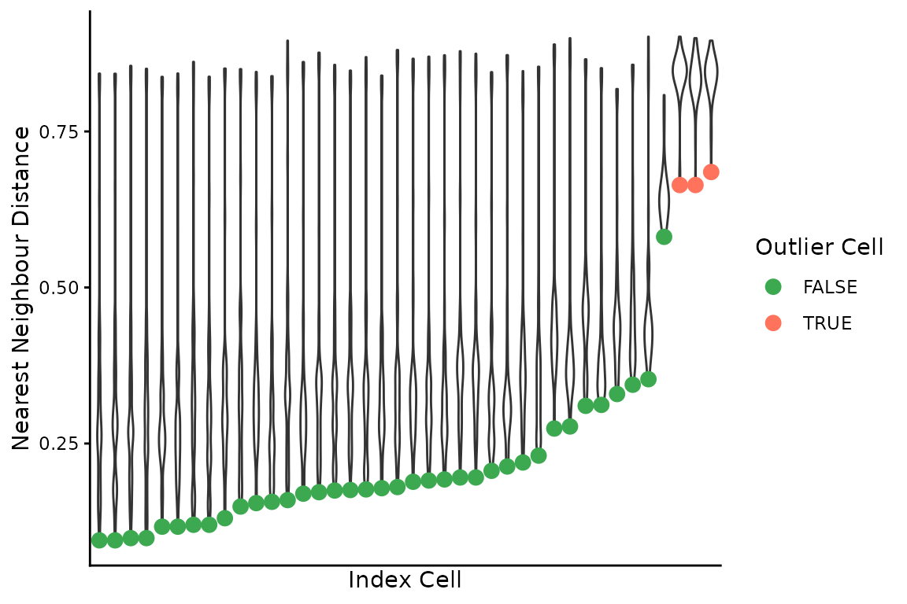

Pairwise Differences Between Cells
Source:vignettes/pairwise-differences.Rmd
pairwise-differences.RmdThe functions here were inspired by a paper called: Genomic evolution and cellular states of whole-genome doubling in ovarian cancer. By Weiner et al. 2025, some folks at MSKCC.
The basic idea is to count the numbers of bins that are different in state between two cells, divided by the number of bins considered. Then we can do things like fit a beta distribution to identify outliers, or do other clustering to find groups of similar/different cells, etc.
These functions will make that a bit easier.
First some toy data:
reads_df <- vroom::vroom("data/example_reads.tsv.gz", show_col_types = FALSE)
# only using a few cells to demonstrate functions below
targ_cells <- unique(reads_df$cell_id)[1:40]
reads_df <- dplyr::filter(reads_df, cell_id %in% targ_cells)
# standard reads dataframe of bin based state calls
dplyr::slice_head(reads_df, n = 5)
#> # A tibble: 5 × 11
#> cell_id chr start end state gc ideal map reads valid
#> <chr> <chr> <dbl> <dbl> <dbl> <dbl> <lgl> <dbl> <dbl> <lgl>
#> 1 AT23998-A138956A-R03-… 1 1 e0 5 e5 4 -1 FALSE 0.349 55 FALSE
#> 2 AT23998-A138956A-R03-… 1 5.00e5 1 e6 4 -1 FALSE 0.770 224 FALSE
#> 3 AT23998-A138956A-R03-… 1 1.00e6 1.5e6 4 0.598 FALSE 0.982 342 TRUE
#> 4 AT23998-A138956A-R03-… 1 1.50e6 2 e6 4 0.539 TRUE 0.963 282 TRUE
#> 5 AT23998-A138956A-R03-… 1 2.00e6 2.5e6 4 0.595 TRUE 0.997 385 TRUE
#> # ℹ 1 more variable: is_low_mappability <lgl>Now, we can measure pairwise distances between all cells. This involves:
- generating all pairwise cell comparisons
- aligning bins for each pair
- collapsing runs of bins based on matched and unmatched states between the cell pair – aka segmenting on state matches
- filtering small runs (segments) of matches or non-matches
- re-binning the runs
- counting number of non-matching bins, divided by total number of bins still considered
- presenting the results for each cell and it’s distances to all other cells
Warning, this function is slow, and the number of pairwise comparisons grows with more cells. E.g., 100 cells is 4950 comparisons and takes a couple minutes. There is definitely room for improvement here.
Parallelizing will make your life a bit better. Internally, this
function uses furrr, you just need to set up a plan.
# first set up a parallel plan, here with 4 cores being used
# future::plan(future::multisession, workers = 4)
pairwise_diffs <- dlptools::pairwise_bin_difference(
reads_df,
# min_seg_length = 2.5e6 # see function documentation. It's the minimum
# length of a stretch of matching/unmatching bins to consider.
)
dplyr::slice_head(pairwise_diffs, n = 5)#> # A tibble: 5 × 5
#> n_diff tot_bins prop_diff index_cell comp_cell
#> <dbl> <dbl> <dbl> <chr> <chr>
#> 1 2214 6144 0.360 AT23998-A138956A-R03-C34 AT23998-A138956A-R04-C58
#> 2 2286 6135 0.373 AT23998-A138956A-R03-C34 AT23998-A138956A-R05-C42
#> 3 2212 6151 0.360 AT23998-A138956A-R03-C34 AT23998-A138956A-R05-C64
#> 4 1972 6141 0.321 AT23998-A138956A-R03-C34 AT23998-A138956A-R06-C31
#> 5 2811 6151 0.457 AT23998-A138956A-R03-C34 AT23998-A138956A-R06-C34which is each cell (index cell) compared to each other
cell (comp_cell) and some information on the proportion of
bins different (prop_diff).
We can then find the nearest neighbour of each cell:
(nn_cells <- dlptools::find_nearest_neighbours(pairwise_diffs))
#> # A tibble: 40 × 7
#> n_diff tot_bins nn_diff index_cell comp_cell max_diff_to_all mean_diff_to_all
#> <dbl> <dbl> <dbl> <chr> <chr> <dbl> <dbl>
#> 1 1701 6134 0.277 AT23998-A… AT23998-… 0.899 0.422
#> 2 1107 6141 0.180 AT23998-A… AT23998-… 0.881 0.361
#> 3 801 6146 0.130 AT23998-A… AT23998-… 0.851 0.339
#> 4 1173 6151 0.191 AT23998-A… AT23998-… 0.870 0.357
#> 5 1202 6146 0.196 AT23998-A… AT23998-… 0.879 0.387
#> 6 1909 6151 0.310 AT23998-A… AT23998-… 0.866 0.467
#> 7 914 6134 0.149 AT23998-A… AT23998-… 0.850 0.349
#> 8 1313 6159 0.213 AT23998-A… AT23998-… 0.872 0.360
#> 9 1202 6146 0.196 AT23998-A… AT23998-… 0.875 0.388
#> 10 1352 6156 0.220 AT23998-A… AT23998-… 0.847 0.390
#> # ℹ 30 more rowsSide Note
The function dlptools::pairwise_bin_difference() has a
targ_cells parameter. Leaving it empty, the default,
compares all cells in a pairwise manner.
This will compare the specified cell or cells against all others:
dlptools::pairwise_bin_difference(
reads_df,
targ_cells = unique(reads_df$cell_id)[1:2]
)
#> # A tibble: 77 × 5
#> n_diff tot_bins prop_diff index_cell comp_cell
#> <int> <int> <dbl> <chr> <chr>
#> 1 2214 6144 0.360 AT23998-A138956A-R03-C34 AT23998-A138956A-R04-C58
#> 2 2286 6135 0.373 AT23998-A138956A-R03-C34 AT23998-A138956A-R05-C42
#> 3 2212 6151 0.360 AT23998-A138956A-R03-C34 AT23998-A138956A-R05-C64
#> 4 1972 6141 0.321 AT23998-A138956A-R03-C34 AT23998-A138956A-R06-C31
#> 5 2811 6151 0.457 AT23998-A138956A-R03-C34 AT23998-A138956A-R06-C34
#> 6 2318 6134 0.378 AT23998-A138956A-R03-C34 AT23998-A138956A-R06-C54
#> 7 1701 6134 0.277 AT23998-A138956A-R03-C34 AT23998-A138956A-R07-C22
#> 8 1926 6146 0.313 AT23998-A138956A-R03-C34 AT23998-A138956A-R08-C36
#> 9 2607 6162 0.423 AT23998-A138956A-R03-C34 AT23998-A138956A-R08-C39
#> 10 2541 6153 0.413 AT23998-A138956A-R03-C34 AT23998-A138956A-R08-C41
#> # ℹ 67 more rowsAlternatively, if you want to just compare some set of cells against themselves, best to just filter upfront:
reads_df |>
dplyr::filter(cell_id %in% unique(reads_df$cell_id)[1:3]) |>
dlptools::pairwise_bin_difference()
#> # A tibble: 3 × 5
#> n_diff tot_bins prop_diff index_cell comp_cell
#> <int> <int> <dbl> <chr> <chr>
#> 1 2214 6144 0.360 AT23998-A138956A-R03-C34 AT23998-A138956A-R04-C58
#> 2 2286 6135 0.373 AT23998-A138956A-R03-C34 AT23998-A138956A-R05-C42
#> 3 1754 6124 0.286 AT23998-A138956A-R04-C58 AT23998-A138956A-R05-C42We can then combine the pairwise differences and nearest neighbours to find outlier cells by fitting a beta distribution to the latter, and finding outlier pairwise comparisons:
(outlier_cells <- dlptools::find_outlier_cells(pairwise_diffs, nn_cells))
#> # A tibble: 3 × 7
#> n_diff tot_bins nn_diff outlier_cell nn_cell max_diff_to_all mean_diff_to_all
#> <dbl> <dbl> <dbl> <chr> <chr> <dbl> <dbl>
#> 1 4002 6026 0.664 AT23998-A138… AT2399… 0.902 0.839
#> 2 4002 6026 0.664 AT23998-A138… AT2399… 0.899 0.832
#> 3 4216 6155 0.685 AT23998-A138… AT2399… 0.896 0.836There is a simple plot that can be made to visualize these distances:
dlptools::plot_nnd_outlier_cells(
pairwise_diffs, nn_cells, outlier_cells
)
With a bit of work, we can re-orient the cell distances matrix to contain each cell compared against all others. The original function performs non-redundant comparisons: A-B, A-C, B-C.
For various reasons, we might also want to see C-A and C-B, even though it’s redundant.
This is actually happening internally in several of the above functions.
This dataframe can get big, as it’s now every cell compared to every other cell.
# first, we need to know all of the cells we want to do this for. It could
# be all cells, or some subset.
# the nearest neighbours frame is all input cells, so could use that.
cell_focused_df <- purrr::map_dfr(
# might want to consider furrr::future_map_dfr
unique(nn_cells$index_cell),
\(cell) {
dlptools::make_cell_focused_matrix(pairwise_diffs, cell)
}
)
dplyr::slice_head(cell_focused_df, n = 5)
#> # A tibble: 5 × 5
#> n_diff tot_bins prop_diff index_cell comp_cell
#> <dbl> <dbl> <dbl> <chr> <chr>
#> 1 2214 6144 0.360 AT23998-A138956A-R03-C34 AT23998-A138956A-R04-C58
#> 2 2286 6135 0.373 AT23998-A138956A-R03-C34 AT23998-A138956A-R05-C42
#> 3 2212 6151 0.360 AT23998-A138956A-R03-C34 AT23998-A138956A-R05-C64
#> 4 1972 6141 0.321 AT23998-A138956A-R03-C34 AT23998-A138956A-R06-C31
#> 5 2811 6151 0.457 AT23998-A138956A-R03-C34 AT23998-A138956A-R06-C34Now every cell will be present in the index_cell
column.